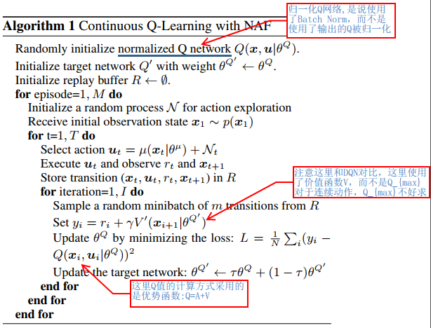

NAF:将DQN用于连续任务
算法背景
传统的DQN算法在计算target的时候使用计算式:
$$
Y_t^Q=R+\gamma argmax_a Q(S_{t+1},a;\theta_t)\tag{1}
$$
但是在面对动作连续性的任务的时候，$argmax_a Q(S_{t+1},a;\theta_t)$是难以求得的，因为可以选取的动作非常得多。
NAF算法核心思想
在计算target的时候，修改(1)式为
$$
target=R+V(S_{t+1}|\theta_t)
$$
也就是使用下一个状态的价值来替代 $argmax_a Q(S_{t+1},a;\theta_t)$，这样在面对动作连续型任务的时候就避免了由于动作太多而导致的 $argmax_a Q(S_{t+1},a;\theta_t)$难以计算的问题。
这里因为使用了状态的价值网络$V$,那么Q值的计算就需要使用下面的计算方法了
$$
Q=A(S_t,a_t)+V(S_{t})\tag{2}
$$
其中的A代表的是Advantage，而V就是价值网络，使用该式是为了利用我们上面需要的生成$V’$的网络。而优势函数A需要另外一个网络来拟合，也可以和V共用相同的hidden network，网络的输出还需要进行下面的计算才能得到我们的A：
$$
A(x,\mu|\theta^A)=-\frac{1}{2}(\mu-\mu(x|\theta^\mu))^TP(x|\theta^P)(\mu-\mu(x|\theta^\mu))\tag{3}
$$
其中的$\mu(x|\theta^\mu)$代表的是动作网络的输出值，$P(x|\theta^P)$是状态独立的正定方阵：
$$
P(x|\theta^P)=L(x|\theta^P)L(x|\theta^p)^T
$$
其中$L(x|\theta^P)$是一个下三角矩阵，元素值来自一个神经网络的线性输出层，对角元素经过e的幂次运算。这样构造L其实就是为了保证P为正定的矩阵，因为根据正定阵的性质:
A为实对称矩阵，若A正定，那么存在上三角矩阵R，使得$A=R^TR$,其中R主对角上的元素均大于0
这里不明白的是，根据正定阵的性质，得到的优势值A会始终小于0，为何？自己推测应该是这样的：这里综合2式和3式可以发现，当$(\mu-\mu(x|\theta^\theta))$越大的时候，对应的优势应该是越小，因为变化过大说明没有收敛，这时候我们动作$\mu$的Q值就应该越小。
算法伪代码
